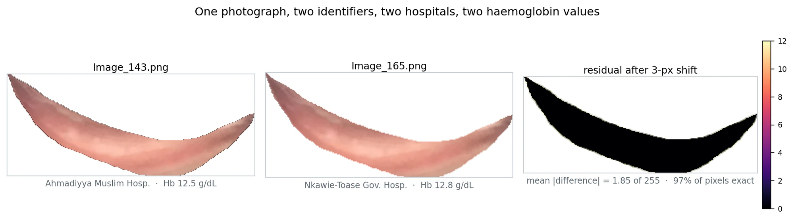

PallorHb
Anaemia screening from photographs of the eyelid, and an audit of the benchmark it is tested on
Preprint on Zenodo, September 2026. Sole author.
I set out to estimate haemoglobin from conjunctiva photographs on the public CP-AnemiC dataset. Its 710 published records turned out to be 383 distinct photographs. The copies cross hospitals and carry conflicting haemoglobin values, so grouping folds by site, the standard safeguard, still left two-fifths of the inflation in place.
Read the preprintCode and duplicate detector
Python, scikit-learn, NumPy, SciPy
- Distinct photographs
- 383 of 710 records
- Inflation from a naive split
- +0.176 AUROC (95% CI +0.120 to +0.232)
- Corrected baseline
- AUROC 0.706 (95% CI 0.653 to 0.757)
- What the image adds
- +0.182 AUROC over demographics alone (DeLong p = 2 × 10⁻⁶)
- Limit
- A triage screen, not a haemoglobin meter: Bland-Altman limits of agreement span 7.8 g/dL
- Reproducibility
- 62 tests. Every number in the manuscript is regenerated and checked by script.
